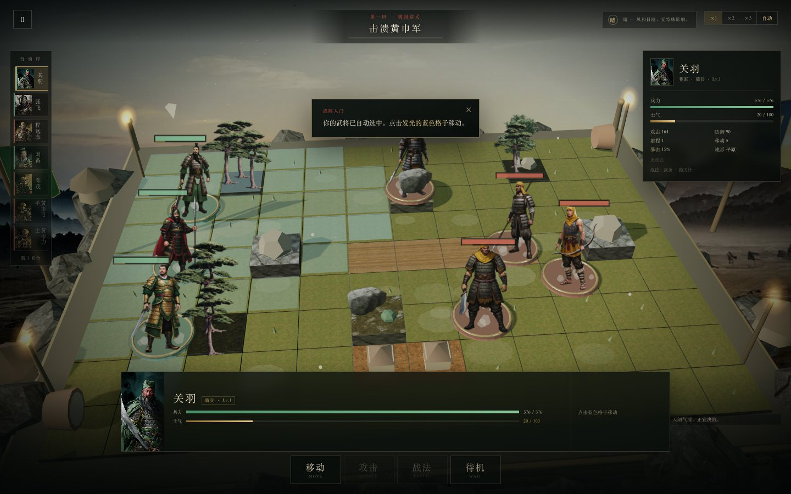

第一版生成界面来得很快。一个 header、一个 grid、几张卡、一个渐变、一个 CTA。它看起来像一个产品，有产品的形状，大约三十秒内很有说服力。
然后你开始用。主操作是页面上第三显眼的东西。每张卡权重一样。空状态是一句谁也没解释清楚的话。字号有十一个层级。动效是装饰。页面技术上完成了，概念上还没开始。
这就是现在真正重要的差距。生成把第一版草稿的成本打平了，但没有把编辑的成本打平。
前 80%
模型非常擅长互联网的平均值。这正是它适合第一版的原因：它知道 dashboard 长什么样、pricing page 有什么、哪些组件通常放一起。如果你的问题是“给我看这个东西的常规形状”，机器是个不错的实习生。
麻烦从“常规形状不是答案”开始。一个密集的技术图谱不该和 SaaS landing page 有同样的层级。一个战棋游戏不该和设置页有同样的节奏。模型仍然会产出看起来合理的东西，因为合理就是它的工作。你的工作是发现“合理”什么时候是错的。
三种失败
所有东西都变成卡片
卡片适合独立、可扫描的条目，不适合其他一切。一个页面有十二张卡，眼睛就没有入口。界面不是在组织信息，而是在逃避“什么最重要”的决定。
所有东西权重一样
生成布局经常平均分配强调，因为强调需要做判断。标题、数据、推荐语、页脚链接占同一个视觉层级，结果礼貌但不可读。层级不是样式选择，它是页面的论点。
动效被当成意义
每个 section 都 fade-up 不是概念，parallax 不是叙事。动效应该解释关系、确认操作或保留上下文。三件事都不做，它就只是页面在自己喘气。
生成给你选项，编辑是删掉其中大部分。

审美是压缩
我以前觉得审美是偏好。现在觉得它更接近压缩：用更少的决定，说同一件事。好屏幕有一个主导想法、清晰的阅读顺序、真正干活的字号层级，以及足够让想法呼吸的留白。
压缩体现在细节里。64px 标题不一定比 48px 好；它只有在改变阅读顺序时才好。边框不一定比背景好；它只有在不增加噪音地澄清分组时才好。每个元素都应该证明自己占用的注意力。
这也是“做得好看一点”这么弱的 prompt 的原因。有用的指令是“让主操作两秒内明显，并删掉所有和它竞争的东西”。那是编辑指令，有标准，可以检查。
一套工作方法
我用模型做屏幕时，不从视觉参考开始，而从大纲开始：
- 这个屏幕回答哪个问题？ 写成一句话，不是功能名。
- 唯一动作是什么？ 如果有两个主操作，你需要两个屏幕。
- 阅读顺序是什么？ 在 styling 之前先给区块编号。
- 什么可以删？ 加一个 section 前先删一个。
- 空、加载、错误状态是什么？ 生成版通常三个都忘了。
然后生成，在 390、768、1440 三个宽度截图，对比三张。响应式失败经常是层级失败的伪装：如果手机布局不知道什么重要，桌面布局大概也不知道。
最后一轮是手工的。不是模型不会写 CSS，而是最后 10% 是一连串需要观点的小判断：收紧这行、删掉那条分隔线、把数字移出卡片、让图片成为主角。每一个都不难，合起来就是 demo 和产品的区别。
一张小评分表
我用五个问题判断一个屏幕是否完成。它们故意很钝：
- 两秒内能看出这个页面干什么吗？ 不能，说明层级做了太多事。
- 有一个明显的下一步吗？ 如果什么都能点，就什么都不是。
- 390px 下还能活吗？ 手机是桌面装饰的诚实测试。
- 删掉 30% 会失去意义吗？ 通常不会。删。
- 动效解释了什么东西吗？ 没有就删。
这些不是审美绝对标准，是过滤器。它们让一个看起来合理的屏幕，没那么容易在没有观点的情况下溜过去。
编辑的工作
不舒服的暗示是：人的角色没有消失，它在移动。花在产出一稿上的时间少了，花在决定哪一稿值得存在上的时间多了。那不是更低级的工作，那是决定作品有没有声音的工作。
模型是很好的合作者，也是自己输出的糟糕编辑。你叫停之前，它会一直加。最后一公里，是你叫停、选出唯一值得保留的想法，并让其他一切为它服务。
说明 / 这是一篇设计现场笔记，不是说生成界面很差。论点更窄：生成改变了生产成本，没有消除判断的必要。文中提到的屏幕是在生成之后手工编辑的。